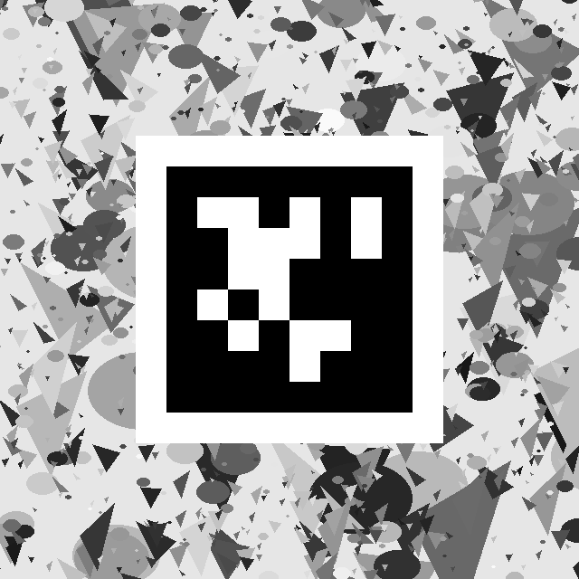
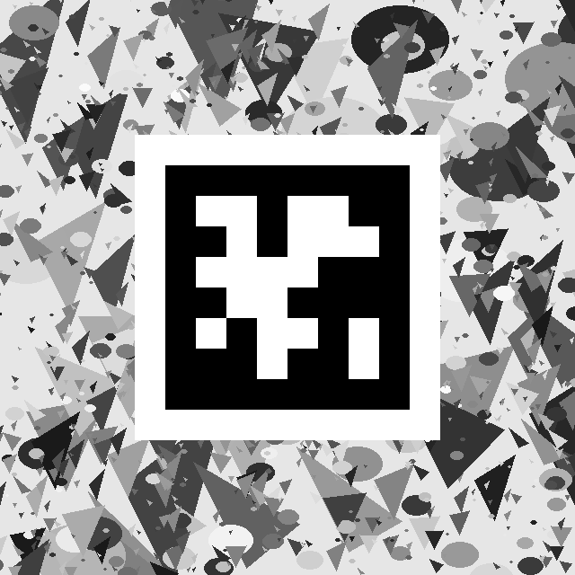

Spell · Terčík AVytlač pri mierke 100 %. Vzor musí mať presne 160 × 160 mm. Pripevnite oba terčíky zvislo, stredy v rovnakej výške a 1,50 m od seba.
Spell · Terčík BPostav sa pred terčíky. Zameraj postupne oba vzory v priebehu 12 sekúnd. Skúšobná guľa sa má zobraziť 25 cm nad polovicou spojnice ich stredov.